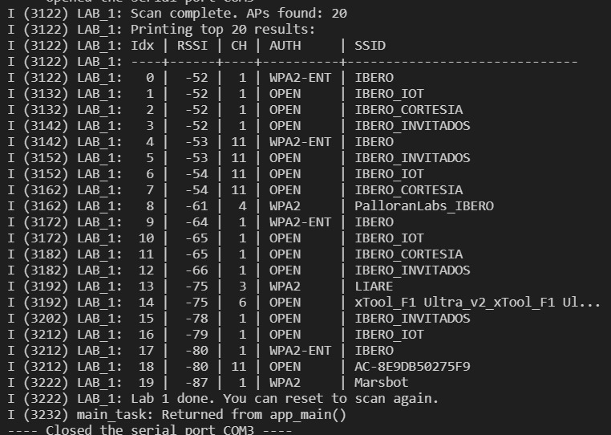

Wi-FI Programming Lab: HTTP Server
Session Purpose:
The general goal of this lab session is to develop the necessary skills to implement an ESP32-based embedded system with Wi-Fi connectivity and remote control capability via a web interface.
Lab 1
1) Activity Objectives
For this lab, we will create a list that will give us data about nearby Wi-Fi connections and modify the code to sort the results by RSSI (from strongest to weakest signal).
1) SSID
2) RSSI
3) Channel
4) Authentication mode (Open, WPA2, etc.)
2) Questions pt.1
1) What is the SSID of the strongest AP detected in your scan?
2) What is the RSSI value of that AP?
3) What authentication mode does that AP use?
4) On which channel is that AP operating?
5) Which channel had the most APs detected in your scan?
3) Materials & Setup
BOM (Bill of Materials)
| # | Item | Qty | Link/Source | Cost (MXN) | Notes |
|---|---|---|---|---|---|
| 1 | ESP32 | 1 | amazon | $365 | None |
Tools / Software
- OS/Environment: ESP-IDF with FreeRTOS on ESP32 (Windows)
- Editors: VS Code with ESP-IDF extension, C/C++
- Debug/Flash: ESP-IDF Monitor and flashing tools
Wiring / Safety
- Board power: USB 5 V from host PC
- Peripherals: None required for this lab
- Safety notes: Check USB connection and avoid disconnections during flashing
4) Procedure
- Step 1: Initialize the ESP32 Wi-Fi system.
- Step 2: Execute a scan of nearby Wi-Fi networks.
- Step 3: Retrieve information of the detected access points.
- Step 4: Sort the results by signal strength (RSSI).
- Step 5: Display the results on the serial monitor.
5) Analysis
The system allows scanning nearby Wi-Fi networks using the ESP32 Wi-Fi driver.
NVS initialization is required for the proper operation of the Wi-Fi subsystem.
The ESP32 operates in station mode to detect nearby access points.
RSSI allows determining the signal strength of each detected network.
The results were sorted by RSSI to show the network with the strongest signal first.
This allows identifying the best available network based on signal strength.
6) Questions pt.2
1) What is the SSID of the strongest AP detected in your scan?
IBERO
2) What is the RSSI value of that AP?
-52 dBm
3) What authentication mode does that AP use?
WPA2-ENT
4) On which channel is that AP operating?
Channel 1
5) Which channel had the most APs detected in your scan?
Channel 1
7) Code
/*
* LAB 1 — Wi-Fi Scan
*
* Learning Goals:
* - The minimum initialization pipeline required for Wi-Fi in ESP-IDF
* - How to scan for Access Points (APs)
* - How to interpret RSSI, channel, and auth mode
*/
//Libraries for standard C functions
#include <string.h>
#include <stdio.h>
//Libraries for FreeRTOS (task management)
#include "freertos/FreeRTOS.h"
#include "freertos/task.h"
//Libraries for ESP-IDF logging and error handling
#include "esp_log.h"
#include "esp_err.h"
//Libraries for Wi-Fi and related components
#include "nvs_flash.h" // nvs_flash_init() lives here
#include "esp_netif.h" // esp_netif_init(), esp_netif_create_default_wifi_sta() lives here
#include "esp_event.h" // esp_event_loop_create_default() lives here
#include "esp_wifi.h" // Wi-Fi driver + scan APIs live here
static const char *TAG = "LAB_1";//Tag for logging
/*
* Function Use:
* Convert auth mode enum to a readable string. Enum is a special type of data to define a series of named integer
* constants. This is useful for printing human-friendly output instead of numeric codes.
*/
static const char *authmode_to_str(wifi_auth_mode_t a)
{
/*Authentication is the process of verifying the identity of a device (phone, laptop) attempting to connect to a wireless network before granting access.*/
switch (a) {
case WIFI_AUTH_OPEN: return "OPEN";
case WIFI_AUTH_WEP: return "WEP";
case WIFI_AUTH_WPA_PSK: return "WPA";
case WIFI_AUTH_WPA2_PSK: return "WPA2";
case WIFI_AUTH_WPA_WPA2_PSK: return "WPA/WPA2";
case WIFI_AUTH_WPA2_ENTERPRISE: return "WPA2-ENT";
case WIFI_AUTH_WPA3_PSK: return "WPA3";
case WIFI_AUTH_WPA2_WPA3_PSK: return "WPA2/WPA3";
default: return "UNKNOWN";
}
}
/*
* Function Use:
* Perform a Wi-Fi scan and print top N results.
* Note: This Lab does not connect to any network yet.
*/
static void wifi_scan_and_print(void)
{
// Scan configuration:
// - channel=0 means "scan all channels"
// - ssid/bssid NULL means "no filter, include all"
// - show_hidden=true includes SSIDs that do not broadcast (rare, but useful)
wifi_scan_config_t scan_cfg = {
.ssid = NULL,
.bssid = NULL,
.channel = 0,
.show_hidden = true,
// You can later introduce active/passive scan options if desired:
// .scan_type = WIFI_SCAN_TYPE_ACTIVE,
// .scan_time.active.min = 100,
// .scan_time.active.max = 300
};
ESP_LOGI(TAG, "Starting Wi-Fi scan (blocking until complete)...");
ESP_ERROR_CHECK(esp_wifi_scan_start(&scan_cfg, true)); // true = block until done
// Get how many APs were found
uint16_t ap_count = 0;
ESP_ERROR_CHECK(esp_wifi_scan_get_ap_num(&ap_count));
ESP_LOGI(TAG, "Scan complete. APs found: %u", ap_count);
// Limit how many records we read to avoid huge stack usage
const uint16_t MAX_AP_PRINT = 20;
wifi_ap_record_t ap_records[MAX_AP_PRINT];
uint16_t number = (ap_count < MAX_AP_PRINT) ? ap_count : MAX_AP_PRINT;
// Read up to 'number' records into ap_records[]
ESP_ERROR_CHECK(esp_wifi_scan_get_ap_records(&number, ap_records));
ESP_LOGI(TAG, "Printing top %u results:", number);
ESP_LOGI(TAG, "Idx | RSSI | CH | AUTH | SSID");
ESP_LOGI(TAG, "----+------+----+----------+------------------------------");
for (int i = 0; i < number; i++) {
// RSSI: closer to 0 is stronger (e.g., -35 is strong, -85 is weak)
// primary: channel number
// ssid: AP name (null-terminated string)
ESP_LOGI(TAG, "%3d | %4d | %2d | %-8s | %s",
i,
ap_records[i].rssi,
ap_records[i].primary,
authmode_to_str(ap_records[i].authmode),
(char *)ap_records[i].ssid);
}
}
/*
* Minimal Wi-Fi initialization required before scanning.
* Order matters:
* 1) NVS
* 2) netif
* 3) event loop
* 4) create default STA interface
* 5) Wi-Fi init + set mode + start
*/
static void wifi_init_for_scan(void)
{
// 1) NVS initialization (required by Wi-Fi)
esp_err_t ret = nvs_flash_init();
if (ret == ESP_ERR_NVS_NO_FREE_PAGES || ret == ESP_ERR_NVS_NEW_VERSION_FOUND) {
// This can happen if flash partition was changed or NVS is corrupted.
// Erase and re-init is a common recovery in labs.
ESP_ERROR_CHECK(nvs_flash_erase());
ESP_ERROR_CHECK(nvs_flash_init());
} else {
ESP_ERROR_CHECK(ret);
}
// 2) Initialize network interface layer
ESP_ERROR_CHECK(esp_netif_init());
// 3) Create the default event loop
ESP_ERROR_CHECK(esp_event_loop_create_default());
// 4) Create default Wi-Fi STA interface
esp_netif_create_default_wifi_sta();
// 5) Initialize Wi-Fi driver
wifi_init_config_t cfg = WIFI_INIT_CONFIG_DEFAULT();
ESP_ERROR_CHECK(esp_wifi_init(&cfg));
// Set station mode (we are a client, not an AP)
ESP_ERROR_CHECK(esp_wifi_set_mode(WIFI_MODE_STA));
// Start Wi-Fi driver (turns radio on and enables operations like scan)
ESP_ERROR_CHECK(esp_wifi_start());
ESP_LOGI(TAG, "Wi-Fi initialized and started in STA mode.");
}
void app_main(void)
{
ESP_LOGI(TAG, "Lab 1 start: Wi-Fi scan demo.");
wifi_init_for_scan();
wifi_scan_and_print();
ESP_LOGI(TAG, "Lab 1 done. You can reset to scan again.");
}
8) Files & Media

Lab 2
1) Activity Objectives
In this lab, we will connect the ESP32 to an Access Point (AP) using SSID and password, and handle connection and disconnection events.
We will observe and log:
1) Wi-Fi driver start event
2) Event of obtaining IP address
3) Assigned IP address
4) Number of connection retries
5) Final result: success or failure
2) Questions pt.1
1) Which event indicates that the Wi-Fi driver has started and is ready to connect?
2) Which event indicates that the device obtained an IP address and is online?
3) What is the assigned IP address?
4) How many retries occurred before success or failure?
5) Which occurred first: WIFI_EVENT_STA_START or IP_EVENT_STA_GOT_IP? Why?
3) Materials & Setup
BOM (Bill of Materials)
| # | Item | Qty | Link/Source | Cost (MXN) | Notes |
|---|---|---|---|---|---|
| 1 | ESP32 | 1 | amazon | $365 | None |
Tools / Software
- OS/Environment: ESP-IDF with FreeRTOS on ESP32 (Windows)
- Editors: VS Code with ESP-IDF extension, C/C++
- Debug/Flash: ESP-IDF Monitor and flashing tools
Wiring / Safety
- Board power: USB 5 V from host PC
- No additional peripherals required
- Ensure stable USB connection
4) Procedure (what you did)
- Step 1: Initialize NVS required by the Wi-Fi system.
- Step 2: Initialize network interface and event loop.
- Step 3: Configure station mode (STA) with SSID and password.
- Step 4: Register the Wi-Fi and IP event handler.
- Step 5: Start the Wi-Fi driver.
- Step 6: Wait for the successful connection event (IP obtained).
- Step 7: Observe the connection result or failure in the terminal.
5) Analysis
The system uses the ESP-IDF event-driven model to handle Wi-Fi connection.
When the driver starts, the WIFI_EVENT_STA_START event is generated, which initiates the connection process.
If the connection is successful, the system receives the IP_EVENT_STA_GOT_IP event, indicating the device is online.
If a disconnection occurs, the system automatically attempts to reconnect until the maximum number of retries is reached.
This mechanism allows a robust and fault-tolerant connection.
This architecture demonstrates:
- Wi-Fi event handling
- Station mode (STA) connection
- Automatic IP address assignment via DHCP
- Automatic reconnection on failure
- Synchronization using Event Groups
Proposed improvements:
- Implement reconnection with exponential backoff.
- Add visual indicator via LED for connection status.
- Integrate HTTP server once connected.
6) Questions pt.2
1) Which event indicates that the Wi-Fi driver has started and is ready to connect?
The event WIFI_EVENT_STA_START -> Attempting connection...
2) Which event indicates that the device obtained an IP address and is online?
The event is IP_EVENT_STA_GOT_IP, located at line 57
3) What is the assigned IP address?
172.20.10.2
4) How many retries occurred before success or failure?
On the first attempt
5) Which occurred first: WIFI_EVENT_STA_START or IP_EVENT_STA_GOT_IP? Why?
WIFI_EVENT_STA_START occurs first because this event starts the search
7) Code
/*
* LAB 2 — Wi-Fi Station Connect + Reconnect (Improved Version)
*/
#include <string.h>
#include <stdio.h>
#include "freertos/FreeRTOS.h"
#include "freertos/event_groups.h"
#include "esp_log.h"
#include "esp_err.h"
#include "nvs_flash.h"
#include "esp_netif.h"
#include "esp_event.h"
#include "esp_wifi.h"
static const char *TAG = "LAB_2";
/* Event group */
static EventGroupHandle_t s_wifi_event_group;
#define WIFI_CONNECTED_BIT BIT0
#define WIFI_FAIL_BIT BIT1
#ifndef WIFI_SSID
#define WIFI_SSID "iPhone de Jose MARIA"
#endif
#ifndef WIFI_PASS
#define WIFI_PASS "123456789"
#endif
static int s_retry = 0;
#define MAX_RETRY 10
/* Event handler */
static void wifi_event_handler(void *arg,
esp_event_base_t event_base,
int32_t event_id,
void *event_data)
{
if (event_base == WIFI_EVENT && event_id == WIFI_EVENT_STA_START) {
ESP_LOGI(TAG, "WIFI_EVENT_STA_START -> Attempting connection...");
esp_wifi_connect();
}
else if (event_base == WIFI_EVENT && event_id == WIFI_EVENT_STA_DISCONNECTED) {
if (s_retry < MAX_RETRY) {
s_retry++;
ESP_LOGW(TAG, "Disconnected! Retry attempt %d of %d",
s_retry, MAX_RETRY);
esp_wifi_connect();
} else {
ESP_LOGE(TAG, "Maximum retries reached. Connection failed.");
xEventGroupSetBits(s_wifi_event_group, WIFI_FAIL_BIT);
}
}
else if (event_base == IP_EVENT && event_id == IP_EVENT_STA_GOT_IP) {
ip_event_got_ip_t *event = (ip_event_got_ip_t *)event_data;
ESP_LOGI(TAG, "IP_EVENT_STA_GOT_IP");
ESP_LOGI(TAG, "Assigned IP: " IPSTR, IP2STR(&event->ip_info.ip));
s_retry = 0;
xEventGroupSetBits(s_wifi_event_group, WIFI_CONNECTED_BIT);
}
}
/* Wi-Fi STA Initialization */
static void wifi_init_sta(void)
{
s_wifi_event_group = xEventGroupCreate();
ESP_ERROR_CHECK(esp_netif_init());
ESP_ERROR_CHECK(esp_event_loop_create_default());
esp_netif_create_default_wifi_sta();
wifi_init_config_t cfg = WIFI_INIT_CONFIG_DEFAULT();
ESP_ERROR_CHECK(esp_wifi_init(&cfg));
ESP_ERROR_CHECK(esp_event_handler_register(
WIFI_EVENT, ESP_EVENT_ANY_ID, &wifi_event_handler, NULL));
ESP_ERROR_CHECK(esp_event_handler_register(
IP_EVENT, IP_EVENT_STA_GOT_IP, &wifi_event_handler, NULL));
wifi_config_t wifi_config = {0};
strncpy((char *)wifi_config.sta.ssid,
WIFI_SSID,
sizeof(wifi_config.sta.ssid));
strncpy((char *)wifi_config.sta.password,
WIFI_PASS,
sizeof(wifi_config.sta.password));
ESP_LOGI(TAG, "Connecting to SSID: %s", WIFI_SSID);
ESP_ERROR_CHECK(esp_wifi_set_mode(WIFI_MODE_STA));
ESP_ERROR_CHECK(esp_wifi_set_config(WIFI_IF_STA, &wifi_config));
ESP_ERROR_CHECK(esp_wifi_start());
}
/* Main */
void app_main(void)
{
ESP_LOGI(TAG, "LAB 2 — Wi-Fi STA Connect + Reconnect");
esp_err_t ret = nvs_flash_init();
if (ret == ESP_ERR_NVS_NO_FREE_PAGES ||
ret == ESP_ERR_NVS_NEW_VERSION_FOUND) {
ESP_ERROR_CHECK(nvs_flash_erase());
ESP_ERROR_CHECK(nvs_flash_init());
} else {
ESP_ERROR_CHECK(ret);
}
wifi_init_sta();
EventBits_t bits = xEventGroupWaitBits(
s_wifi_event_group,
WIFI_CONNECTED_BIT | WIFI_FAIL_BIT,
pdFALSE,
pdFALSE,
pdMS_TO_TICKS(30000)
);
if (bits & WIFI_CONNECTED_BIT) {
ESP_LOGI(TAG, "Connected! Ready for next steps.");
}
else if (bits & WIFI_FAIL_BIT) {
ESP_LOGE(TAG, "Connection failed after maximum retries.");
}
else {
ESP_LOGE(TAG, "Timeout waiting for Wi-Fi connection.");
}
}
8) Files & Media
Video:
Lab 3
1) Activity Objectives
In this lab, we will use the ESP32 to create an HTTP server that allows controlling physical hardware via a web page.
We will observe and log:
1) HTTP server start
2) Client connection from the browser
3) HTTP request reception
4) Activation or deactivation of physical hardware
5) Server response to the client
2) Materials & Setup
BOM (Bill of Materials)
| # | Item | Qty | Link/Source | Cost (MXN) | Notes |
|---|---|---|---|---|---|
| 1 | ESP32 | 1 | Amazon | $365 | Main microcontroller |
| 2 | LED | 1 | Lab kit | $2 | Device to control |
| 3 | 220Ω Resistor | 1 | Lab kit | $1 | LED protection |
| 4 | Breadboard & wires | 1 | Lab kit | $140 | Connections |
| --- |
Tools / Software
- OS/Environment: ESP-IDF with FreeRTOS on ESP32 (Windows)
- Editor: VS Code with ESP-IDF extension
- ESP-IDF Serial Monitor
- Web browser (Chrome, Edge, etc.)
Wiring / Safety
- LED connected to a GPIO configured as output
- Series resistor with LED
- Powered via USB 5V from PC
- Check correct connection and LED polarity
3) Procedure
- Step 1: Connect ESP32 to Wi-Fi in station (STA) mode
- Step 2: Configure GPIO as digital output
- Step 3: Initialize the HTTP server on ESP32
- Step 4: Create a web page accessible from a browser
- Step 5: Register handlers for HTTP requests
- Step 6: Control the LED state according to the request received
- Step 7: Verify hardware control from the browser
4) Analysis
ESP32 functions as an HTTP server that allows controlling physical hardware via a web interface.
When a client accesses the ESP32 IP address, the server sends a web page.
This page contains controls that allow sending requests to the server.
When the server receives a request, it executes an action on the GPIO.
This enables remote control of physical devices over the network.
This architecture demonstrates:
- HTTP server implementation on ESP32
- Remote control of physical hardware
- Handling HTTP GET requests
- Software-hardware interaction
- GPIO control over a network
Proposed improvements:
- Control multiple devices
- Advanced web interface
- Authentication implementation
- Control from the internet
- Real-time communication support
5) Code
/*
* LAB 3 — ESP32-C6 Wi-Fi + HTTP LED Control
*
* Features:
* - Wi-Fi STA connect + reconnect using events
* - Wait for IP (WIFI_CONNECTED_BIT)
* - Simple GPIO LED control (gpio_reset_pin + gpio_set_direction)
* - HTTP server:
* GET / -> HTML UI
* GET /api/led -> JSON {"state":0|1}
* POST /api/led -> JSON {"state":0|1} sets LED, returns {"ok":true}
*
*/
// String handling and standard libraries
#include <string.h>
#include <stdio.h>
#include <stdlib.h>
// FreeRTOS and event groups
#include "freertos/FreeRTOS.h"
#include "freertos/event_groups.h"
// ESP-IDF Logging and error handling
#include "esp_log.h"
#include "esp_err.h"
// Wi-Fi and network
#include "nvs_flash.h"
#include "esp_netif.h"
#include "esp_event.h"
#include "esp_wifi.h"
// GPIO control
#include "driver/gpio.h"
// HTTP server
#include "esp_http_server.h"
/* ===================== User config ===================== */
#define WIFI_SSID "SSID_HERE"
#define WIFI_PASS "PASS_HERE"
/* LED pin */
#define LED_GPIO 8
/* Reconnect policy */
#define MAX_RETRY 10
/* ===================== Globals ===================== */
static const char *TAG = "LAB_3";
// Wi-Fi event group and bit seen in Lab 2
static EventGroupHandle_t s_wifi_event_group;
#define WIFI_CONNECTED_BIT BIT0
static int s_retry = 0; // Retry count for Wi-Fi reconnects
static int s_led_state = 0; // 0=OFF, 1=ON
static httpd_handle_t s_server = NULL; // HTTP server handle
/* ===================== LED helpers ===================== */
static void led_init(void)
{
gpio_reset_pin(LED_GPIO);
gpio_set_direction(LED_GPIO, GPIO_MODE_OUTPUT);
s_led_state = 0;
gpio_set_level(LED_GPIO, s_led_state);
ESP_LOGI(TAG, "LED initialized on GPIO %d (state=%d)", LED_GPIO, s_led_state);
}
static void led_set(int on)
{
s_led_state = (on != 0);
gpio_set_level(LED_GPIO, s_led_state);
ESP_LOGI(TAG, "LED set to %d", s_led_state);
}
/* ===================== HTTP handlers ===================== */
static esp_err_t api_led_get(httpd_req_t *req)
{
char resp[32];
snprintf(resp, sizeof(resp), "{\"state\":%d}", s_led_state);
httpd_resp_set_type(req, "application/json");
httpd_resp_send(req, resp, HTTPD_RESP_USE_STRLEN);
return ESP_OK;
}
static esp_err_t api_led_post(httpd_req_t *req)
{
if (req->content_len <= 0 || req->content_len > 256) {
httpd_resp_send_err(req, HTTPD_400_BAD_REQUEST, "Invalid Content-Length");
return ESP_FAIL;
}
char buf[257] = {0};
int received = httpd_req_recv(req, buf, req->content_len);
if (received <= 0) {
httpd_resp_send_err(req, HTTPD_400_BAD_REQUEST, "Empty body");
return ESP_FAIL;
}
buf[received] = '\0';
int state = -1;
char *p = strstr(buf, "\"state\"");
if (p) {
p = strchr(p, ':');
if (p) state = atoi(p + 1);
}
if (state != 0 && state != 1) {
httpd_resp_send_err(req, HTTPD_400_BAD_REQUEST, "state must be 0 or 1");
return ESP_FAIL;
}
led_set(state);
httpd_resp_set_type(req, "application/json");
httpd_resp_sendstr(req, "{\"ok\":true}");
return ESP_OK;
}
static esp_err_t root_get_handler(httpd_req_t *req)
{
static const char *INDEX_HTML =
"<!doctype html>\n"
"<html>\n"
"<head>\n"
" <meta charset='utf-8'>\n"
" <meta name='viewport' content='width=device-width, initial-scale=1'>\n"
" <title>ESP32-C6 LED</title>\n"
"</head>\n"
"<body>\n"
" <h2>ESP32-C6 LED Control</h2>\n"
" <button onclick='setLed(1)'>ON</button>\n"
" <button onclick='setLed(0)'>OFF</button>\n"
" <p id='st'>State: ?</p>\n"
" <script>\n"
" async function refresh(){\n"
" const r = await fetch('/api/led');\n"
" const j = await r.json();\n"
" document.getElementById('st').innerText = 'State: ' + j.state;\n"
" }\n"
" async function setLed(v){\n"
" await fetch('/api/led', {\n"
" method: 'POST',\n"
" headers: {'Content-Type':'application/json'},\n"
" body: JSON.stringify({state:v})\n"
" });\n"
" refresh();\n"
" }\n"
" setInterval(refresh, 1000);\n"
" refresh();\n"
" </script>\n"
"</body>\n"
"</html>\n";
httpd_resp_set_type(req, "text/html");
httpd_resp_send(req, INDEX_HTML, HTTPD_RESP_USE_STRLEN);
return ESP_OK;
}
static void http_server_start(void)
{
httpd_config_t config = HTTPD_DEFAULT_CONFIG();
ESP_ERROR_CHECK(httpd_start(&s_server, &config));
ESP_LOGI(TAG, "HTTP server started");
httpd_uri_t root = { .uri="/", .method=HTTP_GET, .handler=root_get_handler, .user_ctx=NULL };
httpd_uri_t led_get = { .uri="/api/led", .method=HTTP_GET, .handler=api_led_get, .user_ctx=NULL };
httpd_uri_t led_post = { .uri="/api/led", .method=HTTP_POST, .handler=api_led_post, .user_ctx=NULL };
ESP_ERROR_CHECK(httpd_register_uri_handler(s_server, &root));
ESP_ERROR_CHECK(httpd_register_uri_handler(s_server, &led_get));
ESP_ERROR_CHECK(httpd_register_uri_handler(s_server, &led_post));
ESP_LOGI(TAG, "Routes registered: / , GET/POST /api/led");
}
/* ===================== Wi-Fi STA connect + events ===================== */
static void wifi_event_handler(void *arg, esp_event_base_t event_base, int32_t event_id, void *event_data)
{
if (event_base == WIFI_EVENT && event_id == WIFI_EVENT_STA_START) {
ESP_LOGI(TAG, "WIFI_EVENT_STA_START -> esp_wifi_connect()");
ESP_ERROR_CHECK(esp_wifi_connect());
return;
}
if (event_base == WIFI_EVENT && event_id == WIFI_EVENT_STA_DISCONNECTED) {
if (s_retry < MAX_RETRY) {
s_retry++;
ESP_LOGW(TAG, "Disconnected. Retrying (%d/%d)...", s_retry, MAX_RETRY);
ESP_ERROR_CHECK(esp_wifi_connect());
} else {
ESP_LOGE(TAG, "Failed to connect after %d retries.", MAX_RETRY);
}
return;
}
if (event_base == IP_EVENT && event_id == IP_EVENT_STA_GOT_IP) {
ip_event_got_ip_t *event = (ip_event_got_ip_t *)event_data;
ESP_LOGI(TAG, "Got IP: " IPSTR, IP2STR(&event->ip_info.ip));
s_retry = 0;
xEventGroupSetBits(s_wifi_event_group, WIFI_CONNECTED_BIT);
return;
}
}
static void wifi_init_sta(void)
{
s_wifi_event_group = xEventGroupCreate();
ESP_ERROR_CHECK(esp_netif_init());
ESP_ERROR_CHECK(esp_event_loop_create_default());
esp_netif_create_default_wifi_sta();
wifi_init_config_t cfg = WIFI_INIT_CONFIG_DEFAULT();
ESP_ERROR_CHECK(esp_wifi_init(&cfg));
ESP_ERROR_CHECK(esp_event_handler_register(WIFI_EVENT, ESP_EVENT_ANY_ID, &wifi_event_handler, NULL));
ESP_ERROR_CHECK(esp_event_handler_register(IP_EVENT, IP_EVENT_STA_GOT_IP, &wifi_event_handler, NULL));
wifi_config_t wifi_config = {0};
strncpy((char *)wifi_config.sta.ssid, WIFI_SSID, sizeof(wifi_config.sta.ssid));
strncpy((char *)wifi_config.sta.password, WIFI_PASS, sizeof(wifi_config.sta.password));
ESP_LOGI(TAG, "Configuring Wi-Fi STA: SSID='%s'", WIFI_SSID);
ESP_ERROR_CHECK(esp_wifi_set_mode(WIFI_MODE_STA));
ESP_ERROR_CHECK(esp_wifi_set_config(WIFI_IF_STA, &wifi_config));
ESP_ERROR_CHECK(esp_wifi_start());
}
/* ===================== app_main ===================== */
void app_main(void)
{
ESP_LOGI(TAG, "Lab 3 start: Wi-Fi + HTTP + LED control.");
// NVS init (required by Wi-Fi)
esp_err_t ret = nvs_flash_init();
if (ret == ESP_ERR_NVS_NO_FREE_PAGES || ret == ESP_ERR_NVS_NEW_VERSION_FOUND) {
ESP_ERROR_CHECK(nvs_flash_erase());
ESP_ERROR_CHECK(nvs_flash_init());
} else {
ESP_ERROR_CHECK(ret);
}
// Connect to Wi-Fi (STA)
wifi_init_sta();
// Wait for "got IP" (connected)
EventBits_t bits = xEventGroupWaitBits(
s_wifi_event_group,
WIFI_CONNECTED_BIT,
pdFALSE,
pdTRUE,
pdMS_TO_TICKS(30000)
);
if (!(bits & WIFI_CONNECTED_BIT)) {
ESP_LOGE(TAG, "Timeout waiting for Wi-Fi connection. Check SSID/PASS and 2.4 GHz.");
return;
}
// Start peripherals + HTTP
led_init();
http_server_start();
ESP_LOGI(TAG, "Open: http://<ESP_IP>/ from a device on the same network.");
}
6) Files & Media
Video:
Lab 4
1) Activity Objectives
In this lab, we will use the ESP32 to create a WebSocket server to communicate in real time with clients.
This allows bidirectional communication for controlling devices or sending sensor data.
We will observe and log:
1) WebSocket server initialization
2) Client connection
3) Sending and receiving messages
4) Updating hardware or variables based on messages
5) Logging events for analysis
2) Materials & Setup
BOM (Bill of Materials)
| # | Item | Qty | Link/Source | Cost (MXN) | Notes |
|---|---|---|---|---|---|
| 1 | ESP32 | 1 | Amazon | $365 | Main microcontroller |
| 2 | LED | 1 | Lab kit | $2 | Device to control |
| 3 | Resistor 220Ω | 1 | Lab kit | $1 | LED protection |
| 4 | Breadboard & wires | 1 | Lab kit | $140 | Connections |
| --- |
Tools / Software
- OS/Environment: ESP-IDF with FreeRTOS on ESP32 (Windows)
- Editor: VS Code with ESP-IDF extension
- ESP-IDF Serial Monitor
- Web browser (Chrome, Edge, etc.)
Wiring / Safety
- LED connected to a GPIO configured as output
- Series resistor with LED
- Powered via USB 5V from PC
- Check correct connection and LED polarity
3) Procedure
- Step 1: Connect ESP32 to Wi-Fi in STA mode
- Step 2: Configure GPIO as output for LED
- Step 3: Initialize the WebSocket server
- Step 4: Wait for client connections
- Step 5: Send and receive messages in real time
- Step 6: Update the LED or variables based on received messages
- Step 7: Log all events in the serial monitor for debugging
4) Analysis
Using WebSockets allows real-time, bidirectional communication between the ESP32 and clients.
When a client connects, the server can immediately send updates or receive commands without polling.
This is ideal for applications like remote control, IoT dashboards, or live sensor monitoring.
The ESP32 can handle multiple clients and push updates asynchronously.
This architecture demonstrates:
- WebSocket server implementation on ESP32
- Real-time bidirectional communication
- Control of hardware from web clients
- Asynchronous event handling
- Efficient network use compared to polling
Proposed improvements:
- Support multiple devices simultaneously
- Add authentication and encryption
- Integrate with a web dashboard for multiple controls
- Send sensor data continuously in JSON format
- Visual feedback in the web UI for device state
5) Code
/*
* LAB 4 — ESP32 WebSocket Server + LED Control
*
* Features:
* - Wi-Fi STA connect + reconnect (Lab 2 style)
* - WebSocket server with real-time communication
* - LED control via WebSocket messages
* - Event logging for connection/disconnection/messages
*/
#include <string.h>
#include <stdio.h>
#include <stdlib.h>
#include "freertos/FreeRTOS.h"
#include "freertos/event_groups.h"
#include "esp_log.h"
#include "esp_err.h"
#include "nvs_flash.h"
#include "esp_netif.h"
#include "esp_event.h"
#include "esp_wifi.h"
#include "driver/gpio.h"
#include "esp_http_server.h"
#include "esp_websocket_server.h"
/* ===================== User config ===================== */
#define WIFI_SSID "SSID_HERE"
#define WIFI_PASS "PASS_HERE"
#define LED_GPIO 8
#define MAX_RETRY 10
static const char *TAG = "LAB_4";
/* Wi-Fi event group */
static EventGroupHandle_t s_wifi_event_group;
#define WIFI_CONNECTED_BIT BIT0
static int s_retry = 0;
static int s_led_state = 0;
/* WebSocket server handle */
static httpd_handle_t s_ws_server = NULL;
/* ===================== LED helpers ===================== */
static void led_init(void)
{
gpio_reset_pin(LED_GPIO);
gpio_set_direction(LED_GPIO, GPIO_MODE_OUTPUT);
s_led_state = 0;
gpio_set_level(LED_GPIO, s_led_state);
ESP_LOGI(TAG, "LED initialized on GPIO %d", LED_GPIO);
}
static void led_set(int on)
{
s_led_state = (on != 0);
gpio_set_level(LED_GPIO, s_led_state);
ESP_LOGI(TAG, "LED set to %d", s_led_state);
}
/* ===================== WebSocket handlers ===================== */
static esp_err_t ws_handler(httpd_req_t *req)
{
/* Only handle WebSocket upgrade requests */
if (req->method == HTTP_GET) {
ESP_LOGI(TAG, "WebSocket GET request received");
return ESP_OK;
}
return ESP_FAIL;
}
/* Example: send LED state update */
static void ws_send_led_state(httpd_handle_t server)
{
char msg[32];
snprintf(msg, sizeof(msg), "{\"led\":%d}", s_led_state);
// TODO: send message to all connected clients
}
/* ===================== HTTP + WS server ===================== */
static void ws_server_start(void)
{
httpd_config_t config = HTTPD_DEFAULT_CONFIG();
ESP_ERROR_CHECK(httpd_start(&s_ws_server, &config));
httpd_uri_t ws_uri = {
.uri = "/ws",
.method = HTTP_GET,
.handler = ws_handler,
.user_ctx = NULL
};
ESP_ERROR_CHECK(httpd_register_uri_handler(s_ws_server, &ws_uri));
ESP_LOGI(TAG, "WebSocket server started at /ws");
}
/* ===================== Wi-Fi STA connect + events ===================== */
static void wifi_event_handler(void *arg, esp_event_base_t event_base, int32_t event_id, void *event_data)
{
if (event_base == WIFI_EVENT && event_id == WIFI_EVENT_STA_START) {
ESP_LOGI(TAG, "WIFI_EVENT_STA_START -> esp_wifi_connect()");
ESP_ERROR_CHECK(esp_wifi_connect());
return;
}
if (event_base == WIFI_EVENT && event_id == WIFI_EVENT_STA_DISCONNECTED) {
if (s_retry < MAX_RETRY) {
s_retry++;
ESP_LOGW(TAG, "Disconnected. Retrying (%d/%d)...", s_retry, MAX_RETRY);
ESP_ERROR_CHECK(esp_wifi_connect());
} else {
ESP_LOGE(TAG, "Failed to connect after %d retries.", MAX_RETRY);
}
return;
}
if (event_base == IP_EVENT && event_id == IP_EVENT_STA_GOT_IP) {
ip_event_got_ip_t *event = (ip_event_got_ip_t *)event_data;
ESP_LOGI(TAG, "Got IP: " IPSTR, IP2STR(&event->ip_info.ip));
s_retry = 0;
xEventGroupSetBits(s_wifi_event_group, WIFI_CONNECTED_BIT);
return;
}
}
static void wifi_init_sta(void)
{
s_wifi_event_group = xEventGroupCreate();
ESP_ERROR_CHECK(esp_netif_init());
ESP_ERROR_CHECK(esp_event_loop_create_default());
esp_netif_create_default_wifi_sta();
wifi_init_config_t cfg = WIFI_INIT_CONFIG_DEFAULT();
ESP_ERROR_CHECK(esp_wifi_init(&cfg));
ESP_ERROR_CHECK(esp_event_handler_register(WIFI_EVENT, ESP_EVENT_ANY_ID, &wifi_event_handler, NULL));
ESP_ERROR_CHECK(esp_event_handler_register(IP_EVENT, IP_EVENT_STA_GOT_IP, &wifi_event_handler, NULL));
wifi_config_t wifi_config = {0};
strncpy((char *)wifi_config.sta.ssid, WIFI_SSID, sizeof(wifi_config.sta.ssid));
strncpy((char *)wifi_config.sta.password, WIFI_PASS, sizeof(wifi_config.sta.password));
ESP_LOGI(TAG, "Configuring Wi-Fi STA: SSID='%s'", WIFI_SSID);
ESP_ERROR_CHECK(esp_wifi_set_mode(WIFI_MODE_STA));
ESP_ERROR_CHECK(esp_wifi_set_config(WIFI_IF_STA, &wifi_config));
ESP_ERROR_CHECK(esp_wifi_start());
}
/* ===================== app_main ===================== */
void app_main(void)
{
ESP_LOGI(TAG, "Lab 4 start: Wi-Fi + WebSocket + LED control.");
esp_err_t ret = nvs_flash_init();
if (ret == ESP_ERR_NVS_NO_FREE_PAGES || ret == ESP_ERR_NVS_NEW_VERSION_FOUND) {
ESP_ERROR_CHECK(nvs_flash_erase());
ESP_ERROR_CHECK(nvs_flash_init());
} else {
ESP_ERROR_CHECK(ret);
}
wifi_init_sta();
EventBits_t bits = xEventGroupWaitBits(
s_wifi_event_group,
WIFI_CONNECTED_BIT,
pdFALSE,
pdTRUE,
pdMS_TO_TICKS(30000)
);
if (!(bits & WIFI_CONNECTED_BIT)) {
ESP_LOGE(TAG, "Timeout waiting for Wi-Fi connection.");
return;
}
led_init();
ws_server_start();
ESP_LOGI(TAG, "Connect a WebSocket client to ws://<ESP_IP>/ws");
}
6) Files & Media
Video: